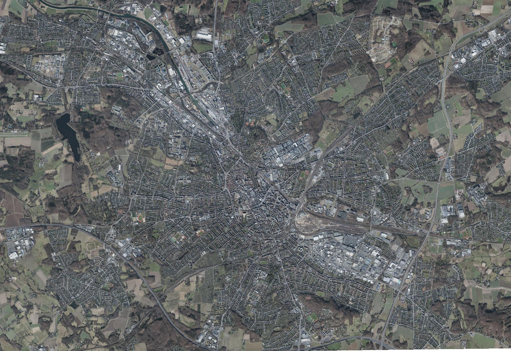

Für Kommunen und Planungsbüros
VerkehrsAI. Pläne verstehen.
KI für die Arbeit an Straßen und Kreuzungen. Mit unserem Forschungsprojekt VerkehrsOS untersuchen wir, wie sich Lage- und Signalpläne digital erschließen und fachlich prüfen lassen.
EU-geförderte Forschung, gemeinsam mit IOTEC GmbH.
Barbarossaplatz, Köln · © Maximilian Schönherr · CC BY-SA 4.0
VerkehrsOS. Unser Forschungsprojekt.
AIFOREU entwickelt VerkehrsOS gemeinsam mit der IOTEC GmbH im Rahmen eines Forschungsprojekts. Im Mittelpunkt steht die Frage, wie sich vorhandene Kreuzungspläne mithilfe von KI auswerten und nachvollziehbar prüfen lassen.
Der Prototyp dient dazu, diese Ansätze zu untersuchen und weiterzuentwickeln. Die fachliche Bewertung und Freigabe bleiben bei den Menschen, die mit den Plänen arbeiten.
Den Bestand im Blick.
Aus Planunterlagen wird eine digitale Grundlage für die Verkehrsplanung. Die Visualisierung zeigt die Idee dahinter: Straßen, Zufahrten und Wege als zusammenhängendes Bild.
Der Knoten im Überblick.
Osnabrück · Berliner Platz
Ihr Bestand. Ihr Anwendungsfall.
VerkehrsOS richtet sich an Teams, die Knotenpunkte bearbeiten und ihre Planungsgrundlagen nachvollziehbar aufbereiten wollen.
Für die Erprobung betrachten wir Ihre Unterlagen, die benötigten Ergebnisse und den fachlichen Prüfprozess gemeinsam.
Die Pläne einer Kreuzung werten wir dabei kostenlos für Sie aus.
- Kommunen
- Vorhandene Planunterlagen erschließen und den Bestand eines Knotenpunkts überblicken.
- Planungsbüros
- Den Bestand überblicken, Angaben fachlich prüfen und eine Grundlage für die weitere Bearbeitung schaffen.
AI4EU-Traffic
Mit Daniel Mentrup und Hendrik Möllenkamp arbeiten wir am Folgeprojekt von VerkehrsOS. Wir wollen Planungsunterlagen mit aktuellen Verkehrsdaten verbinden. KI-Kameras sollen diese Daten auch dort erfassen, wo es keinen Stromanschluss gibt.
„Gemeinsam mit der AIFOREU und TransformIT Europe entsteht ein KI-gestütztes System, das unstrukturierte Daten automatisch erfasst, versteht und in Echtzeit in Planungsprozesse einbindet.“
Ihr Plan. Unser nächster Schritt.
Sie arbeiten mit Kreuzungsplänen? Schicken Sie uns die Unterlagen einer Kreuzung. Wir werten sie im Rahmen der Erprobung kostenlos aus und besprechen das Ergebnis mit Ihnen.
Eine Kreuzung kostenlos auswerten lassenForschung und Erprobung
Unser Prototyp konzentriert sich auf die Digitalisierung und Prüfung von Kreuzungsplänen.